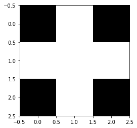
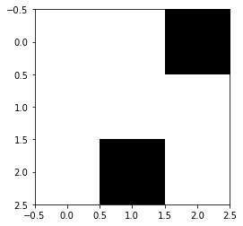

(1) 入力層が N = 9 個、隠れ層が K = 5 個、出力層が M = 2 個のパーセプトロンで出来ている
(2) 学習率は r = 0.01、エポック数は E = 100、訓練データセットのサイズは L = 4、バッチサイズは B = 2 とする
(3) 学習用入力信号 data_training は以下の 3x3, 1 bit画像データ 4 つから作成する(黒が 0 、白が 1)
画像 0 :

画像 1 :
画像 2 :

画像 3 :

(3) 画像 0 と 1 はクラス 0、画像 2 と 3 はクラス 1 に属する
(4) 重みとバイアスは平均 0、標準偏差 0.1 の正規乱数で初期化する
(5) 検証データセットとテストデータセットは使用しない
(6) 学習後に以下の未知画像を分類する
未知画像:
